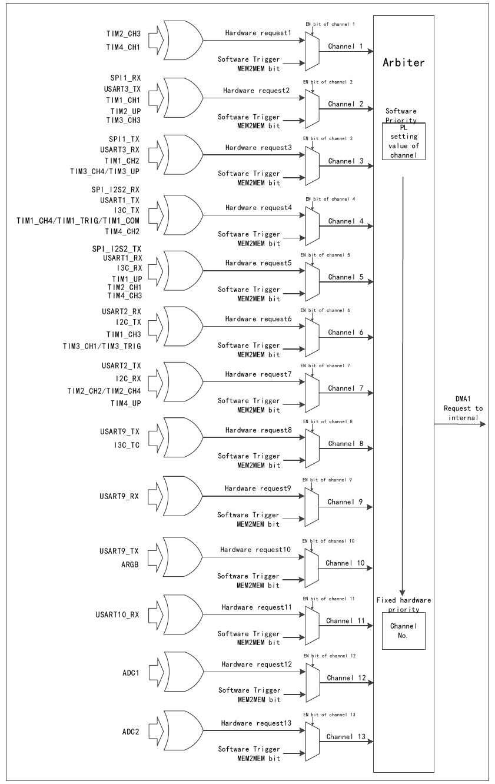
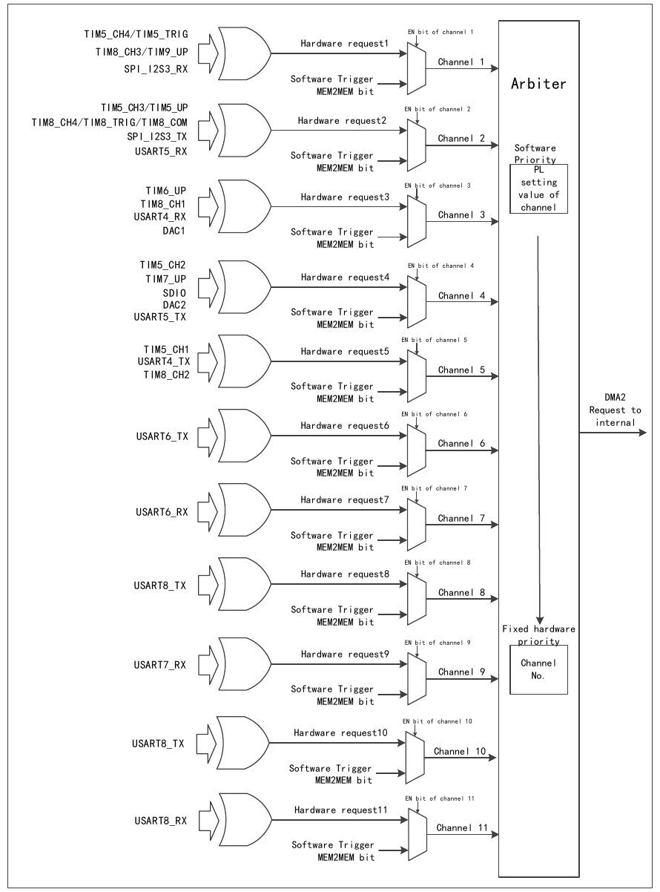

The Direct Memory Access controller (DMA) provides high-speed data transfer between peripherals and memory or between memory and memory, without CPU intervention. Data can be moved quickly via DMA, freeing up CPU resources for other operations.
Each channel of the DMA controller is dedicated to managing memory access requests from one or more peripherals. An arbiter coordinates the priority among the channels.
1) Arbitration Priority
DMA requests generated by multiple independent channels are input to the DMA controller via a logical-OR structure; only one channel's request can be serviced at a time. The internal arbiter selects the peripheral/memory access to initiate based on the priority of the channel requests.
In software management, the application can independently configure the priority level for each channel through the PL[1:0] bits of the DMAy_CFGRx register, including four levels: highest, high, medium, and low. When the software-set levels among channels are equal, the module selects according to a fixed hardware priority — a lower channel number has higher priority than a higher one.
2) DMA Configuration
When the DMA controller receives a request signal, it accesses the requesting peripheral or memory and establishes data transfer between the peripheral or memory and memory. This mainly involves the following three steps:
Each channel includes three DMA data transfer modes:
The configuration procedure is as follows:
3) Circular Mode
Setting the CIRC bit of the DMAy_CFGRx register to 1 enables the circular mode function for channel data transfer. In circular mode, when the number of data transfers becomes 0, the contents of the DMAy_CNTRx register are automatically reloaded to their initial value, and the internal peripheral and memory address registers are also reloaded to the initial address values set in the DMAy_PADDRx and DMAy_MADDRx registers. The DMA operation continues until the channel is disabled or DMA mode is turned off.
4) DMA Processing Status
When the application queries the DMA channel status, it can first access the GIFx bit of the DMAy_INTFR register to determine which channel currently had a DMA event, and then handle the specific DMA event content for that channel.
The total amount of data transferred per round by each DMA channel is programmable, up to 65535 transfers. The DMAy_CNTRx register indicates the number of transfers to be performed. When EN=0, the set value is written; when EN=1 enables the DMA transfer channel, this register becomes read-only and decrements after each transfer.
The peripheral and memory transfer data supports an automatic address pointer increment function, and the pointer increment is programmable. The address of the first data accessed for transfer is stored in the DMAy_PADDRx and DMAy_MADDRx registers. By setting the PINC bit or MINC bit of the DMAy_CFGRx register to 1, the peripheral address auto-increment mode or memory address auto-increment mode can be enabled respectively. PSIZE[1:0] sets the peripheral address data access size and address increment size, and MSIZE[1:0] sets the memory address data access size and address increment size, with four options: 8-bit, 16-bit, 32-bit, and 64-bit. The specific data transfer methods are shown in the table below:
| Source width | Target width | Transfer count | Source: address/data | Target: address/data | Transfer operation |
|---|---|---|---|---|---|
| 8 | 8 | 4 | 0x00/B0 | 0x00/B0 | Source address increment is aligned with the source-set data width, and the access size equals the source data width. Target address increment is aligned with the target-set data width, and the access size equals the target data width. Data sent to the target follows the principle: if the data size is insufficient, the high bits are padded with 0; if the data size overflows, the high bits are discarded. Storage method: little-endian mode, low address stores low byte, high address stores high byte. |
| 0x01/B1 | 0x01/B1 | ||||
| 0x02/B2 | 0x02/B2 | ||||
| 0x03/B3 | 0x03/B3 | ||||
| 8 | 16 | 4 | 0x00/B0 | 0x00/00B0 | Source address increment is aligned with the source-set data width, and the access size equals the source data width. Target address increment is aligned with the target-set data width, and the access size equals the target data width. Data sent to the target follows the principle: if the data size is insufficient, the high bits are padded with 0; if the data size overflows, the high bits are discarded. Storage method: little-endian mode, low address stores low byte, high address stores high byte. |
| 0x01/B1 | 0x02/00B1 | ||||
| 0x02/B2 | 0x04/00B2 | ||||
| 0x03/B3 | 0x06/00B3 | ||||
| 8 | 32 | 4 | 0x00/B0 | 0x00/000000B0 | Source address increment is aligned with the source-set data width, and the access size equals the source data width. Target address increment is aligned with the target-set data width, and the access size equals the target data width. Data sent to the target follows the principle: if the data size is insufficient, the high bits are padded with 0; if the data size overflows, the high bits are discarded. Storage method: little-endian mode, low address stores low byte, high address stores high byte. |
| 0x01/B1 | 0x04/000000B1 | ||||
| 0x02/B2 | 0x08/000000B2 | ||||
| 0x03/B3 | 0x0C/000000B3 | ||||
| 8 | 64 | 4 | 0x00/B0 | 0x00/00…0000B0 | Source address increment is aligned with the source-set data width, and the access size equals the source data width. Target address increment is aligned with the target-set data width, and the access size equals the target data width. Data sent to the target follows the principle: if the data size is insufficient, the high bits are padded with 0; if the data size overflows, the high bits are discarded. Storage method: little-endian mode, low address stores low byte, high address stores high byte. |
| 0x01/B1 | 0x08/00…0000B1 | ||||
| 0x02/B2 | 0x10/00…0000B2 | ||||
| 0x03/B3 | 0x18/00…0000B3 | ||||
| 16 | 8 | 4 | 0x00/B1B0 | 0x00/B0 | Source address increment is aligned with the source-set data width, and the access size equals the source data width. Target address increment is aligned with the target-set data width, and the access size equals the target data width. Data sent to the target follows the principle: if the data size is insufficient, the high bits are padded with 0; if the data size overflows, the high bits are discarded. Storage method: little-endian mode, low address stores low byte, high address stores high byte. |
| 0x02/B3B2 | 0x01/B2 | ||||
| 0x04/B5B4 | 0x02/B4 | ||||
| 0x06/B7B6 | 0x03/B6 | ||||
| 16 | 16 | 4 | 0x00/B1B0 | 0x00/B1B0 | Source address increment is aligned with the source-set data width, and the access size equals the source data width. Target address increment is aligned with the target-set data width, and the access size equals the target data width. Data sent to the target follows the principle: if the data size is insufficient, the high bits are padded with 0; if the data size overflows, the high bits are discarded. Storage method: little-endian mode, low address stores low byte, high address stores high byte. |
| 0x02/B3B2 | 0x02/B3B2 | ||||
| 0x04/B5B4 | 0x04/B5B4 | ||||
| 0x06/B7B6 | 0x06/B7B6 | ||||
| 16 | 32 | 4 | 0x00/B1B0 | 0x00/0000B1B0 | Source address increment is aligned with the source-set data width, and the access size equals the source data width. Target address increment is aligned with the target-set data width, and the access size equals the target data width. Data sent to the target follows the principle: if the data size is insufficient, the high bits are padded with 0; if the data size overflows, the high bits are discarded. Storage method: little-endian mode, low address stores low byte, high address stores high byte. |
| 0x02/B3B2 | 0x04/0000B3B2 | ||||
| 0x04/B5B4 | 0x08/0000B5B4 | ||||
| 0x06/B7B6 | 0x0C/0000B7B6 | ||||
| 16 | 64 | 4 | 0x00/B1B0 | 0x00/00…00B1B0 | Source address increment is aligned with the source-set data width, and the access size equals the source data width. Target address increment is aligned with the target-set data width, and the access size equals the target data width. Data sent to the target follows the principle: if the data size is insufficient, the high bits are padded with 0; if the data size overflows, the high bits are discarded. Storage method: little-endian mode, low address stores low byte, high address stores high byte. |
| 0x02/B3B2 | 0x08/00…00B3B2 | ||||
| 0x04/B5B4 | 0x10/00…00B5B4 | ||||
| 0x06/B7B6 | 0x18/00…00B7B6 | ||||
| 32 | 8 | 4 | 0x00/B3B2B1B0 | 0x00/B0 | Source address increment is aligned with the source-set data width, and the access size equals the source data width. Target address increment is aligned with the target-set data width, and the access size equals the target data width. Data sent to the target follows the principle: if the data size is insufficient, the high bits are padded with 0; if the data size overflows, the high bits are discarded. Storage method: little-endian mode, low address stores low byte, high address stores high byte. |
| 0x04/B7B6B5B4 | 0x01/B4 | ||||
| 0x08/BBBAB9B8 | 0x02/B8 | ||||
| 0x0C/BFBEBDBC | 0x03/BC | ||||
| 32 | 16 | 4 | 0x00/B3B2B1B0 | 0x00/B1B0 | Source address increment is aligned with the source-set data width, and the access size equals the source data width. Target address increment is aligned with the target-set data width, and the access size equals the target data width. Data sent to the target follows the principle: if the data size is insufficient, the high bits are padded with 0; if the data size overflows, the high bits are discarded. Storage method: little-endian mode, low address stores low byte, high address stores high byte. |
| 0x04/B7B6B5B4 | 0x02/B5B4 | ||||
| 0x08/BBBAB9B8 | 0x04/B9B8 | ||||
| 0x0C/BFBEBDBC | 0x06/BDBC | ||||
| 32 | 32 | 4 | 0x00/B3B2B1B0 | 0x00/B3B2B1B0 | Source address increment is aligned with the source-set data width, and the access size equals the source data width. Target address increment is aligned with the target-set data width, and the access size equals the target data width. Data sent to the target follows the principle: if the data size is insufficient, the high bits are padded with 0; if the data size overflows, the high bits are discarded. Storage method: little-endian mode, low address stores low byte, high address stores high byte. |
| 0x04/B7B6B5B4 | 0x04/B7B6B5B4 | ||||
| 0x08/BBBAB9B8 | 0x08/BBBAB9B8 | ||||
| 0x0C/BFBEBDBC | 0x0C/BFBEBDBC | ||||
| 32 | 64 | 4 | 0x00/B3B2B1B0 | 0x00/00…B3B2B1B0 | Source address increment is aligned with the source-set data width, and the access size equals the source data width. Target address increment is aligned with the target-set data width, and the access size equals the target data width. Data sent to the target follows the principle: if the data size is insufficient, the high bits are padded with 0; if the data size overflows, the high bits are discarded. Storage method: little-endian mode, low address stores low byte, high address stores high byte. |
| 0x04/B7B6B5B4 | 0x08/00…B7B6B5B4 | ||||
| 0x08/BBBAB9B8 | 0x10/00…BBBAB9B8 | ||||
| 0x0C/BFBEBDBC | 0x18/00…BFBEBDBC | ||||
| 64 | 8 | 4 | 0x00/1716…10 | 0x00/10 | Source address increment is aligned with the source-set data width, and the access size equals the source data width. Target address increment is aligned with the target-set data width, and the access size equals the target data width. Data sent to the target follows the principle: if the data size is insufficient, the high bits are padded with 0; if the data size overflows, the high bits are discarded. Storage method: little-endian mode, low address stores low byte, high address stores high byte. |
| 0x08/1F1E…18 | 0x01/18 | ||||
| 0x10/2726…20 | 0x02/20 | ||||
| 0x18/2F2E…28 | 0x03/28 | ||||
| 64 | 16 | 4 | 0x00/1716…10 | 0x00/1110 | Source address increment is aligned with the source-set data width, and the access size equals the source data width. Target address increment is aligned with the target-set data width, and the access size equals the target data width. Data sent to the target follows the principle: if the data size is insufficient, the high bits are padded with 0; if the data size overflows, the high bits are discarded. Storage method: little-endian mode, low address stores low byte, high address stores high byte. |
| 0x08/1F1E…18 | 0x02/1918 | ||||
| 0x10/2726…20 | 0x04/2120 | ||||
| 0x18/2F2E…28 | 0x06/2928 | ||||
| 64 | 32 | 4 | 0x00/1716…10 | 0x00/13121110 | Source address increment is aligned with the source-set data width, and the access size equals the source data width. Target address increment is aligned with the target-set data width, and the access size equals the target data width. Data sent to the target follows the principle: if the data size is insufficient, the high bits are padded with 0; if the data size overflows, the high bits are discarded. Storage method: little-endian mode, low address stores low byte, high address stores high byte. |
| 0x08/1F1E…18 | 0x04/1B1A1918 | ||||
| 0x10/2726…20 | 0x08/23222120 | ||||
| 0x18/2F2E…28 | 0x0C/2B2A2928 | ||||
| 64 | 64 | 4 | 0x00/1716…10 | 0x00/1716…10 | Source address increment is aligned with the source-set data width, and the access size equals the source data width. Target address increment is aligned with the target-set data width, and the access size equals the target data width. Data sent to the target follows the principle: if the data size is insufficient, the high bits are padded with 0; if the data size overflows, the high bits are discarded. Storage method: little-endian mode, low address stores low byte, high address stores high byte. |
| 0x08/1F1E…18 | 0x08/1F1E…18 | ||||
| 0x10/2726…20 | 0x10/2726…20 | ||||
| 0x18/2F2E…28 | 0x18/2F2E…28 |
The DMA controller provides 24 channels, of which DMA1 contains 13 channels and DMA2 contains 11 channels. Each channel corresponds to multiple peripheral requests. By setting the corresponding DMA control bits in the respective peripheral registers, the DMA function of each peripheral can be independently enabled or disabled. The specific correspondences are as follows.


| Peripheral | Channel 1 | Channel 2 | Channel 3 | Channel 4 | Channel 5 | Channel 6 | Channel 7 |
|---|---|---|---|---|---|---|---|
| SPI1 | SPI1_RX | SPI1_TX | |||||
| SPI/I2S2 | SPI_I2S2_RX | SPI_I2S2_TX | |||||
| USART1 | USART1_TX | USART1_RX | |||||
| USART2 | USART2_RX | USART2_TX | |||||
| USART3 | USART3_TX | USART3_RX | |||||
| I2C | I2C_TX | I2C_RX | |||||
| I3C | I3C_TX | I3C_RX | |||||
| TIM1 | TIM1_CH1 | TIM1_CH2 | TIM1_CH4 / TIM1_TRIG / TIM1_COM | TIM1_UP | TIM1_CH3 | ||
| TIM2 | TIM2_CH3 | TIM2_UP | TIM2_CH1 | TIM2_CH2 / TIM2_CH4 | |||
| TIM3 | TIM3_CH3 | TIM3_UP / TIM3_CH4 | TIM3_CH1 / TIM3_TRIG | ||||
| TIM4 | TIM4_CH1 | TIM4_CH2 | TIM4_CH3 | TIM4_UP |
| Peripheral | Channel 8 | Channel 9 | Channel 10 | Channel 11 | Channel 12 | Channel 13 |
|---|---|---|---|---|---|---|
| ADC1 | ADC1 | |||||
| ADC2 | ADC2 | |||||
| USART9 | USART9_TX | USART9_RX | ||||
| USART10 | USART10_TX | USART10_RX | ||||
| I3C | I3C_TC | |||||
| ARGB | ARGB |
| Peripheral | Channel 1 | Channel 2 | Channel 3 | Channel 4 | Channel 5 | Channel 6 | Channel 7 |
|---|---|---|---|---|---|---|---|
| TIM5 | TIM5_CH4 / TIM5_TRIG | TIM5_CH3 / TIM5_UP | TIM5_CH2 | TIM5_CH1 | |||
| TIM6 | TIM6_UP | ||||||
| TIM7 | TIM7_UP | ||||||
| TIM8 | TIM8_CH3 / TIM8_UP | TIM8_CH4 / TIM8_TRIG / TIM8_COM | TIM8_CH1 | TIM8_CH2 | |||
| SPI/I2S3 | SPI_I2S3_RX | SPI_I2S3_TX | |||||
| SDIO | SDIO | ||||||
| DAC1 | DAC1 | ||||||
| DAC2 | DAC2 | ||||||
| USART4 | USART4_RX | USART4_TX | |||||
| USART5 | USART5_RX | USART5_TX | |||||
| USART6 | USART6_TX | USART6_RX |
| Peripheral | Channel 8 | Channel 9 | Channel 10 | Channel 11 |
|---|---|---|---|---|
| USART7 | USART7_TX | USART7_RX | ||
| USART8 | USART8_TX | USART8_RX |
| Name | Address | Description | Reset Value |
|---|---|---|---|
| R32_DMA1_INTFR | 0x40020000 | DMA1 interrupt status register | 0x00000000 |
| R32_DMA1_INTFCR | 0x40020004 | DMA1 interrupt flag clear register | 0x00000000 |
| R32_DMA1_CFGR1 | 0x40020008 | DMA1 channel 1 configuration register | 0x00000000 |
| R32_DMA1_CNTR1 | 0x4002000C | DMA1 channel 1 transfer data count register | 0x00000000 |
| R32_DMA1_PADDR1 | 0x40020010 | DMA1 channel 1 peripheral address register | 0x00000000 |
| R32_DMA1_MADDR1 | 0x40020014 | DMA1 channel 1 memory address register | 0x00000000 |
| R32_DMA1_CFGR2 | 0x4002001C | DMA1 channel 2 configuration register | 0x00000000 |
| R32_DMA1_CNTR2 | 0x40020020 | DMA1 channel 2 transfer data count register | 0x00000000 |
| R32_DMA1_PADDR2 | 0x40020024 | DMA1 channel 2 peripheral address register | 0x00000000 |
| R32_DMA1_MADDR2 | 0x40020028 | DMA1 channel 2 memory address register | 0x00000000 |
| R32_DMA1_CFGR3 | 0x40020030 | DMA1 channel 3 configuration register | 0x00000000 |
| R32_DMA1_CNTR3 | 0x40020034 | DMA1 channel 3 transfer data count register | 0x00000000 |
| R32_DMA1_PADDR3 | 0x40020038 | DMA1 channel 3 peripheral address register | 0x00000000 |
| R32_DMA1_MADDR3 | 0x4002003C | DMA1 channel 3 memory address register | 0x00000000 |
| R32_DMA1_CFGR4 | 0x40020044 | DMA1 channel 4 configuration register | 0x00000000 |
| R32_DMA1_CNTR4 | 0x40020048 | DMA1 channel 4 transfer data count register | 0x00000000 |
| R32_DMA1_PADDR4 | 0x4002004C | DMA1 channel 4 peripheral address register | 0x00000000 |
| R32_DMA1_MADDR4 | 0x40020050 | DMA1 channel 4 memory address register | 0x00000000 |
| R32_DMA1_CFGR5 | 0x40020058 | DMA1 channel 5 configuration register | 0x00000000 |
| R32_DMA1_CNTR5 | 0x4002005C | DMA1 channel 5 transfer data count register | 0x00000000 |
| R32_DMA1_PADDR5 | 0x40020060 | DMA1 channel 5 peripheral address register | 0x00000000 |
| R32_DMA1_MADDR5 | 0x40020064 | DMA1 channel 5 memory address register | 0x00000000 |
| R32_DMA1_CFGR6 | 0x4002006C | DMA1 channel 6 configuration register | 0x00000000 |
| R32_DMA1_CNTR6 | 0x40020070 | DMA1 channel 6 transfer data count register | 0x00000000 |
| R32_DMA1_PADDR6 | 0x40020074 | DMA1 channel 6 peripheral address register | 0x00000000 |
| R32_DMA1_MADDR6 | 0x40020078 | DMA1 channel 6 memory address register | 0x00000000 |
| R32_DMA1_CFGR7 | 0x40020080 | DMA1 channel 7 configuration register | 0x00000000 |
| R32_DMA1_CNTR7 | 0x40020084 | DMA1 channel 7 transfer data count register | 0x00000000 |
| R32_DMA1_PADDR7 | 0x40020088 | DMA1 channel 7 peripheral address register | 0x00000000 |
| R32_DMA1_MADDR7 | 0x4002008C | DMA1 channel 7 memory address register | 0x00000000 |
| R32_DMA1_CFGR8 | 0x40020090 | DMA1 channel 8 configuration register | 0x00000000 |
| R32_DMA1_CNTR8 | 0x40020094 | DMA1 channel 8 transfer data count register | 0x00000000 |
| R32_DMA1_PADDR8 | 0x40020098 | DMA1 channel 8 peripheral address register | 0x00000000 |
| R32_DMA1_MADDR8 | 0x4002009C | DMA1 channel 8 memory address register | 0x00000000 |
| R32_DMA1_CFGR9 | 0x400200A0 | DMA1 channel 9 configuration register | 0x00000000 |
| R32_DMA1_CNTR9 | 0x400200A4 | DMA1 channel 9 transfer data count register | 0x00000000 |
| R32_DMA1_PADDR9 | 0x400200A8 | DMA1 channel 9 peripheral address register | 0x00000000 |
| R32_DMA1_MADDR9 | 0x400200AC | DMA1 channel 9 memory address register | 0x00000000 |
| R32_DMA1_CFGR10 | 0x400200B0 | DMA1 channel 10 configuration register | 0x00000000 |
| R32_DMA1_CNTR10 | 0x400200B4 | DMA1 channel 10 transfer data count register | 0x00000000 |
| R32_DMA1_PADDR10 | 0x400200B8 | DMA1 channel 10 peripheral address register | 0x00000000 |
| R32_DMA1_MADDR10 | 0x400200BC | DMA1 channel 10 memory address register | 0x00000000 |
| R32_DMA1_CFGR11 | 0x400200C0 | DMA1 channel 11 configuration register | 0x00000000 |
| R32_DMA1_CNTR11 | 0x400200C4 | DMA1 channel 11 transfer data count register | 0x00000000 |
| R32_DMA1_PADDR11 | 0x400200C8 | DMA1 channel 11 peripheral address register | 0x00000000 |
| R32_DMA1_MADDR11 | 0x400200CC | DMA1 channel 11 memory address register | 0x00000000 |
| R32_DMA1_CFGR12 | 0x400200D0 | DMA1 channel 12 configuration register | 0x00000000 |
| R32_DMA1_CNTR12 | 0x400200D4 | DMA1 channel 12 transfer data count register | 0x00000000 |
| R32_DMA1_PADDR12 | 0x400200D8 | DMA1 channel 12 peripheral address register | 0x00000000 |
| R32_DMA1_MADDR12 | 0x400200DC | DMA1 channel 12 memory address register | 0x00000000 |
| R32_DMA1_CFGR13 | 0x400200E0 | DMA1 channel 13 configuration register | 0x00000000 |
| R32_DMA1_CNTR13 | 0x400200E4 | DMA1 channel 13 transfer data count register | 0x00000000 |
| R32_DMA1_PADDR13 | 0x400200E8 | DMA1 channel 13 peripheral address register | 0x00000000 |
| R32_DMA1_MADDR13 | 0x400200EC | DMA1 channel 13 memory address register | 0x00000000 |
| R32_DMA1_EXTEM_INTFR | 0x400200F0 | DMA1 extended interrupt status register | 0x00000000 |
| R32_DMA1_EXTEM_INTFCR | 0x400200F4 | DMA1 extended interrupt flag clear register | 0x00000000 |
| Name | Address | Description | Reset Value |
|---|---|---|---|
| R32_DMA2_INTFR | 0x40020400 | DMA2 interrupt status register | 0x00000000 |
| R32_DMA2_INTFCR | 0x40020404 | DMA2 interrupt flag clear register | 0x00000000 |
| R32_DMA2_CFGR1 | 0x40020408 | DMA2 channel 1 configuration register | 0x00000000 |
| R32_DMA2_CNTR1 | 0x4002040C | DMA2 channel 1 transfer data count register | 0x00000000 |
| R32_DMA2_PADDR1 | 0x40020410 | DMA2 channel 1 peripheral address register | 0x00000000 |
| R32_DMA2_MADDR1 | 0x40020414 | DMA2 channel 1 memory address register | 0x00000000 |
| R32_DMA2_CFGR2 | 0x4002041C | DMA2 channel 2 configuration register | 0x00000000 |
| R32_DMA2_CNTR2 | 0x40020420 | DMA2 channel 2 transfer data count register | 0x00000000 |
| R32_DMA2_PADDR2 | 0x40020424 | DMA2 channel 2 peripheral address register | 0x00000000 |
| R32_DMA2_MADDR2 | 0x40020428 | DMA2 channel 2 memory address register | 0x00000000 |
| R32_DMA2_CFGR3 | 0x40020430 | DMA2 channel 3 configuration register | 0x00000000 |
| R32_DMA2_CNTR3 | 0x40020434 | DMA2 channel 3 transfer data count register | 0x00000000 |
| R32_DMA2_PADDR3 | 0x40020438 | DMA2 channel 3 peripheral address register | 0x00000000 |
| R32_DMA2_MADDR3 | 0x4002043C | DMA2 channel 3 memory address register | 0x00000000 |
| R32_DMA2_CFGR4 | 0x40020444 | DMA2 channel 4 configuration register | 0x00000000 |
| R32_DMA2_CNTR4 | 0x40020448 | DMA2 channel 4 transfer data count register | 0x00000000 |
| R32_DMA2_PADDR4 | 0x4002044C | DMA2 channel 4 peripheral address register | 0x00000000 |
| R32_DMA2_MADDR4 | 0x40020450 | DMA2 channel 4 memory address register | 0x00000000 |
| R32_DMA2_CFGR5 | 0x40020458 | DMA2 channel 5 configuration register | 0x00000000 |
| R32_DMA2_CNTR5 | 0x4002045C | DMA2 channel 5 transfer data count register | 0x00000000 |
| R32_DMA2_PADDR5 | 0x40020460 | DMA2 channel 5 peripheral address register | 0x00000000 |
| R32_DMA2_MADDR5 | 0x40020464 | DMA2 channel 5 memory address register | 0x00000000 |
| R32_DMA2_CFGR6 | 0x4002046C | DMA2 channel 6 configuration register | 0x00000000 |
| R32_DMA2_CNTR6 | 0x40020470 | DMA2 channel 6 transfer data count register | 0x00000000 |
| R32_DMA2_PADDR6 | 0x40020474 | DMA2 channel 6 peripheral address register | 0x00000000 |
| R32_DMA2_MADDR6 | 0x40020478 | DMA2 channel 6 memory address register | 0x00000000 |
| R32_DMA2_CFGR7 | 0x40020480 | DMA2 channel 7 configuration register | 0x00000000 |
| R32_DMA2_CNTR7 | 0x40020484 | DMA2 channel 7 transfer data count register | 0x00000000 |
| R32_DMA2_PADDR7 | 0x40020488 | DMA2 channel 7 peripheral address register | 0x00000000 |
| R32_DMA2_MADDR7 | 0x4002048C | DMA2 channel 7 memory address register | 0x00000000 |
| R32_DMA2_CFGR8 | 0x40020490 | DMA2 channel 8 configuration register | 0x00000000 |
| R32_DMA2_CNTR8 | 0x40020494 | DMA2 channel 8 transfer data count register | 0x00000000 |
| R32_DMA2_PADDR8 | 0x40020498 | DMA2 channel 8 peripheral address register | 0x00000000 |
| R32_DMA2_MADDR8 | 0x4002049C | DMA2 channel 8 memory address register | 0x00000000 |
| R32_DMA2_CFGR9 | 0x400204A0 | DMA2 channel 9 configuration register | 0x00000000 |
| R32_DMA2_CNTR9 | 0x400204A4 | DMA2 channel 9 transfer data count register | 0x00000000 |
| R32_DMA2_PADDR9 | 0x400204A8 | DMA2 channel 9 peripheral address register | 0x00000000 |
| R32_DMA2_MADDR9 | 0x400204AC | DMA2 channel 9 memory address register | 0x00000000 |
| R32_DMA2_CFGR10 | 0x400204B0 | DMA2 channel 10 configuration register | 0x00000000 |
| R32_DMA2_CNTR10 | 0x400204B4 | DMA2 channel 10 transfer data count register | 0x00000000 |
| R32_DMA2_PADDR10 | 0x400204B8 | DMA2 channel 10 peripheral address register | 0x00000000 |
| R32_DMA2_MADDR10 | 0x400204BC | DMA2 channel 10 memory address register | 0x00000000 |
| R32_DMA2_CFGR11 | 0x400204C0 | DMA2 channel 11 configuration register | 0x00000000 |
| R32_DMA2_CNTR11 | 0x400204C4 | DMA2 channel 11 transfer data count register | 0x00000000 |
| R32_DMA2_PADDR11 | 0x400204C8 | DMA2 channel 11 peripheral address register | 0x00000000 |
| R32_DMA2_MADDR11 | 0x400204CC | DMA2 channel 11 memory address register | 0x00000000 |
| R32_DMA2_EXTEM_INTFR | 0x400204D0 | DMA2 extended interrupt status register | 0x00000000 |
| R32_DMA2_EXTEM_INTFCR | 0x400204D4 | DMA2 extended interrupt flag clear register | 0x00000000 |
Offset address: 0x00
| 31 | 30 | 29 | 28 | 27 | 26 | 25 | 24 | 23 | 22 | 21 | 20 | 19 | 18 | 17 | 16 |
|---|---|---|---|---|---|---|---|---|---|---|---|---|---|---|---|
| Reserved | TEIF7 | HTIF7 | TCIF7 | GIF7 | TEIF6 | HTIF6 | TCIF6 | GIF6 | TEIF5 | HTIF5 | TCIF5 | GIF5 | |||
| 15 | 14 | 13 | 12 | 11 | 10 | 9 | 8 | 7 | 6 | 5 | 4 | 3 | 2 | 1 | 0 |
| TEIF4 | HTIF4 | TCIF4 | GIF4 | TEIF3 | HTIF3 | TCIF3 | GIF3 | TEIF2 | HTIF2 | TCIF2 | GIF2 | TEIF1 | HTIF1 | TCIF1 | GIF1 |
| Bits | Name | Access | Description | Reset |
|---|---|---|---|---|
| [31:28] | Reserved | RO | Reserved. | 0 |
| 27 / 23 / 19 / 15 / 11 / 7 / 3 | TEIFx | RO | Transfer error flag of channel x (x=1/2/3/4/5/6/7): 1 = a transfer error occurred on channel x; 0 = no transfer error on channel x. Set by hardware; software writes the CTEIFx bit to clear this flag. | 0 |
| 26 / 22 / 18 / 14 / 10 / 6 / 2 | HTIFx | RO | Transfer half flag of channel x (x=1/2/3/4/5/6/7): 1 = a transfer half event occurred on channel x; 0 = no transfer half on channel x. Set by hardware; software writes the CHTIFx bit to clear this flag. | 0 |
| 25 / 21 / 17 / 13 / 9 / 5 / 1 | TCIFx | RO | Transfer complete flag of channel x (x=1/2/3/4/5/6/7): 1 = a transfer complete event occurred on channel x; 0 = no transfer complete event on channel x. Set by hardware; software writes the CTCIFx bit to clear this flag. | 0 |
| 24 / 20 / 16 / 12 / 8 / 4 / 0 | GIFx | RO | Global interrupt flag of channel x (x=1/2/3/4/5/6/7): 1 = TEIFx or HTIFx or TCIFx occurred on channel x; 0 = no TEIFx or HTIFx or TCIFx occurred on channel x. Set by hardware; software writes the CGIFx bit to clear this flag. | 0 |
Offset address: 0x04
| 31 | 30 | 29 | 28 | 27 | 26 | 25 | 24 | 23 | 22 | 21 | 20 | 19 | 18 | 17 | 16 |
|---|---|---|---|---|---|---|---|---|---|---|---|---|---|---|---|
| Reserved | CTEIF7 | CHTIF7 | CTCIF7 | CGIF7 | CTEIF6 | CHTIF6 | CTCIF6 | CGIF6 | CTEIF5 | CHTIF5 | CTCIF5 | CGIF5 | |||
| 15 | 14 | 13 | 12 | 11 | 10 | 9 | 8 | 7 | 6 | 5 | 4 | 3 | 2 | 1 | 0 |
| CTEIF4 | CHTIF4 | CTCIF4 | CGIF4 | CTEIF3 | CHTIF3 | CTCIF3 | CGIF3 | CTEIF2 | CHTIF2 | CTCIF2 | CGIF2 | CTEIF1 | CHTIF1 | CTCIF1 | CGIF1 |
| Bits | Name | Access | Description | Reset |
|---|---|---|---|---|
| [31:28] | Reserved | RO | Reserved. | 0 |
| 27 / 23 / 19 / 15 / 11 / 7 / 3 | CTEIFx | WO | Clear transfer error flag of channel x (x=1/2/3/4/5/6/7): 1 = clears the TEIFx flag in the DMAy_INTFR register; 0 = no effect. | 0 |
| 26 / 22 / 18 / 14 / 10 / 6 / 2 | CHTIFx | WO | Clear transfer half flag of channel x (x=1/2/3/4/5/6/7): 1 = clears the HTIFx flag in the DMAy_INTFR register; 0 = no effect. | 0 |
| 25 / 21 / 17 / 13 / 9 / 5 / 1 | CTCIFx | WO | Clear transfer complete flag of channel x (x=1/2/3/4/5/6/7): 1 = clears the TCIFx flag in the DMAy_INTFR register; 0 = no effect. | 0 |
| 24 / 20 / 16 / 12 / 8 / 4 / 0 | CGIFx | WO | Clear global interrupt flag of channel x (x=1/2/3/4/5/6/7): 1 = clears the TEIFx/HTIFx/TCIFx/GIFx flags in the DMAy_INTFR register; 0 = no effect. | 0 |
Offset address: 0x08 + (x-1)*20
| 31 | 30 | 29 | 28 | 27 | 26 | 25 | 24 | 23 | 22 | 21 | 20 | 19 | 18 | 17 | 16 |
|---|---|---|---|---|---|---|---|---|---|---|---|---|---|---|---|
| Reserved | |||||||||||||||
| 15 | 14 | 13 | 12 | 11 | 10 | 9 | 8 | 7 | 6 | 5 | 4 | 3 | 2 | 1 | 0 |
| Reserved | MEM2MEM | PL[1:0] | MSIZE[1:0] | PSIZE[1:0] | MINC | PINC | CIRC | DIR | TEIE | HTIE | TCIE | EN | |||
| Bits | Name | Access | Description | Reset |
|---|---|---|---|---|
| [31:15] | Reserved | RO | Reserved. | 0 |
| 14 | MEM2MEM | RW | Memory-to-memory mode enable: 1 = enable memory-to-memory data transfer mode; 0 = not memory-to-memory data transfer. | 0 |
| [13:12] | PL[1:0] | RW | Channel priority setting: 00 = low; 01 = medium; 10 = high; 11 = highest. | 00b |
| [11:10] | MSIZE[1:0] | RW | Memory address data width setting: 00 = 8-bit; 01 = 16-bit; 10 = 32-bit; 11 = 64-bit. Note: For chips whose fifth-from-last digit of the lot number is greater than 0, the non-zero-wait region supports 64-bit data width DMA access. | 00b |
| [9:8] | PSIZE[1:0] | RW | Peripheral address data width setting: 00 = 8-bit; 01 = 16-bit; 10 = 32-bit; 11 = 64-bit. Note: For chips whose fifth-from-last digit of the lot number is greater than 0, the non-zero-wait region supports 64-bit data width DMA access. | 00b |
| 7 | MINC | RW | Memory address increment mode enable: 1 = enable memory address increment operation; 0 = memory address remains unchanged. | 0 |
| 6 | PINC | RW | Peripheral address increment mode enable: 1 = enable peripheral address increment operation; 0 = peripheral address remains unchanged. | 0 |
| 5 | CIRC | RW | DMA channel circular mode enable: 1 = enable circular operation; 0 = perform single operation. | 0 |
| 4 | DIR | RW | Data transfer direction: 1 = read from memory; 0 = read from peripheral. | 0 |
| 3 | TEIE | RW | Transfer error interrupt enable control: 1 = enable transfer error interrupt; 0 = disable transfer error interrupt. | 0 |
| 2 | HTIE | RW | Transfer half interrupt enable control: 1 = enable transfer half interrupt; 0 = disable transfer half interrupt. | 0 |
| 1 | TCIE | RW | Transfer complete interrupt enable control: 1 = enable transfer complete interrupt; 0 = disable transfer complete interrupt. | 0 |
| 0 | EN | RW | Channel enable control: 1 = channel enabled; 0 = channel disabled. When a DMA transfer error occurs, hardware automatically clears this bit to 0, disabling the channel. | 0 |
Offset address: 0x0C + (x-1)*20
| 31 | 30 | 29 | 28 | 27 | 26 | 25 | 24 | 23 | 22 | 21 | 20 | 19 | 18 | 17 | 16 |
|---|---|---|---|---|---|---|---|---|---|---|---|---|---|---|---|
| Reserved | |||||||||||||||
| 15 | 14 | 13 | 12 | 11 | 10 | 9 | 8 | 7 | 6 | 5 | 4 | 3 | 2 | 1 | 0 |
| NDT[15:0] | |||||||||||||||
| Bits | Name | Access | Description | Reset |
|---|---|---|---|---|
| [31:16] | Reserved | RO | Reserved. | 0 |
| [15:0] | NDT[15:0] | RW | Number of data transfers, range 0-65535. Indicates the number of remaining transfers (the register content is decremented after each DMA transfer). In circular mode, the register content is automatically reloaded to the previously configured value. | 0 |
Offset address: 0x10 + (x-1)*20
| 31 | 30 | 29 | 28 | 27 | 26 | 25 | 24 | 23 | 22 | 21 | 20 | 19 | 18 | 17 | 16 | 15 | 14 | 13 | 12 | 11 | 10 | 9 | 8 | 7 | 6 | 5 | 4 | 3 | 2 | 1 | 0 |
|---|---|---|---|---|---|---|---|---|---|---|---|---|---|---|---|---|---|---|---|---|---|---|---|---|---|---|---|---|---|---|---|
| PA[31:0] | |||||||||||||||||||||||||||||||
| Bits | Name | Access | Description | Reset |
|---|---|---|---|---|
| [31:0] | PA[31:0] | RW | Peripheral base address, used as the source or destination address for peripheral data transfer. When PSIZE[1:0]='01' (16-bit), the module automatically ignores bit0 and the operation address is auto-aligned to 2 bytes; when PSIZE[1:0]='10' (32-bit), the module automatically ignores bit[1:0] and the operation address is auto-aligned to 4 bytes. | 0 |
Offset address: 0x14 + (x-1)*20
| 31 | 30 | 29 | 28 | 27 | 26 | 25 | 24 | 23 | 22 | 21 | 20 | 19 | 18 | 17 | 16 | 15 | 14 | 13 | 12 | 11 | 10 | 9 | 8 | 7 | 6 | 5 | 4 | 3 | 2 | 1 | 0 |
|---|---|---|---|---|---|---|---|---|---|---|---|---|---|---|---|---|---|---|---|---|---|---|---|---|---|---|---|---|---|---|---|
| MA[31:0] | |||||||||||||||||||||||||||||||
| Bits | Name | Access | Description | Reset |
|---|---|---|---|---|
| [31:0] | MA[31:0] | RW | Memory data address, used as the source or destination address for data transfer. When MSIZE[1:0]='01' (16-bit), the module automatically ignores bit0 and the operation address is auto-aligned to 2 bytes; when MSIZE[1:0]='10' (32-bit), the module automatically ignores bit[1:0] and the operation address is auto-aligned to 4 bytes. | 0 |
Offset address: DMA1: 0xF0; DMA2: 0xD0
| 31 | 30 | 29 | 28 | 27 | 26 | 25 | 24 | 23 | 22 | 21 | 20 | 19 | 18 | 17 | 16 |
|---|---|---|---|---|---|---|---|---|---|---|---|---|---|---|---|
| Reserved | TEIF13 | HTIF13 | TCIF13 | GIF13 | TEIF12 | HTIF12 | TCIF12 | GIF12 | |||||||
| 15 | 14 | 13 | 12 | 11 | 10 | 9 | 8 | 7 | 6 | 5 | 4 | 3 | 2 | 1 | 0 |
| TEIF11 | HTIF11 | TCIF11 | GIF11 | TEIF10 | HTIF10 | TCIF10 | GIF10 | TEIF9 | HTIF9 | TCIF9 | GIF9 | TEIF8 | HTIF8 | TCIF8 | GIF8 |
| Bits | Name | Access | Description | Reset |
|---|---|---|---|---|
| [31:24] | Reserved | RO | Reserved. | 0 |
| 23 / 19 / 15 / 11 / 7 / 3 | TEIFx | RO | Transfer error flag of channel x (x=8/9/10/11/12/13): 1 = a transfer error occurred on channel x; 0 = no transfer error on channel x. Set by hardware; software writes the CTEIFx bit to clear this flag. | 0 |
| 22 / 18 / 14 / 10 / 6 / 2 | HTIFx | RO | Transfer half flag of channel x (x=8/9/10/11/12/13): 0 = no transfer half on channel x; 1 = a transfer half event occurred on channel x. Set by hardware; software writes the CHTIFx bit to clear this flag. | 0 |
| 21 / 17 / 13 / 9 / 5 / 1 | TCIFx | RO | Transfer complete flag of channel x (x=8/9/10/11/12/13): 1 = a transfer complete event occurred on channel x; 0 = no transfer complete event on channel x. Set by hardware; software writes the CTCIFx bit to clear this flag. | 0 |
| 20 / 16 / 12 / 8 / 4 / 0 | GIFx | RO | Global interrupt flag of channel x (x=8/9/10/11/12/13): 1 = TEIFx or HTIFx or TCIFx occurred on channel x; 0 = no TEIFx or HTIFx or TCIFx occurred on channel x. Set by hardware; software writes the CGIFx bit to clear this flag. | 0 |
Offset address: DMA1: 0xF4; DMA2: 0xD4
| 31 | 30 | 29 | 28 | 27 | 26 | 25 | 24 | 23 | 22 | 21 | 20 | 19 | 18 | 17 | 16 |
|---|---|---|---|---|---|---|---|---|---|---|---|---|---|---|---|
| Reserved | CTEIF13 | CHTIF13 | CTCIF13 | CGIF13 | CTEIF12 | CHTIF12 | CTCIF12 | CGIF12 | |||||||
| 15 | 14 | 13 | 12 | 11 | 10 | 9 | 8 | 7 | 6 | 5 | 4 | 3 | 2 | 1 | 0 |
| CTEIF11 | CHTIF11 | CTCIF11 | CGIF11 | CTEIF10 | CHTIF10 | CTCIF10 | CGIF10 | CTEIF9 | CHTIF9 | CTCIF9 | CGIF9 | CTEIF8 | CHTIF8 | CTCIF8 | CGIF8 |
| Bits | Name | Access | Description | Reset |
|---|---|---|---|---|
| [31:24] | Reserved | RO | Reserved. | 0 |
| 23 / 19 / 15 / 11 / 7 / 3 | CTEIFx | WO | Clear transfer error flag of channel x (x=8/9/10/11/12/13): 1 = clears the TEIFx flag in the DMA_INTFR register; 0 = no effect. | 0 |
| 22 / 18 / 14 / 10 / 6 / 2 | CHTIFx | WO | Clear transfer half flag of channel x (x=8/9/10/11/12/13): 1 = clears the HTIFx flag in the DMA_INTFR register; 0 = no effect. | 0 |
| 21 / 17 / 13 / 9 / 5 / 1 | CTCIFx | WO | Clear transfer complete flag of channel x (x=8/9/10/11/12/13): 1 = clears the TCIFx flag in the DMA_INTFR register; 0 = no effect. | 0 |
| 20 / 16 / 12 / 8 / 4 / 0 | CGIFx | WO | Clear global interrupt flag of channel x (x=8/9/10/11/12/13): 1 = clears the TEIFx/HTIFx/TCIFx/GIFx flags in the DMA_INTFR register; 0 = no effect. | 0 |